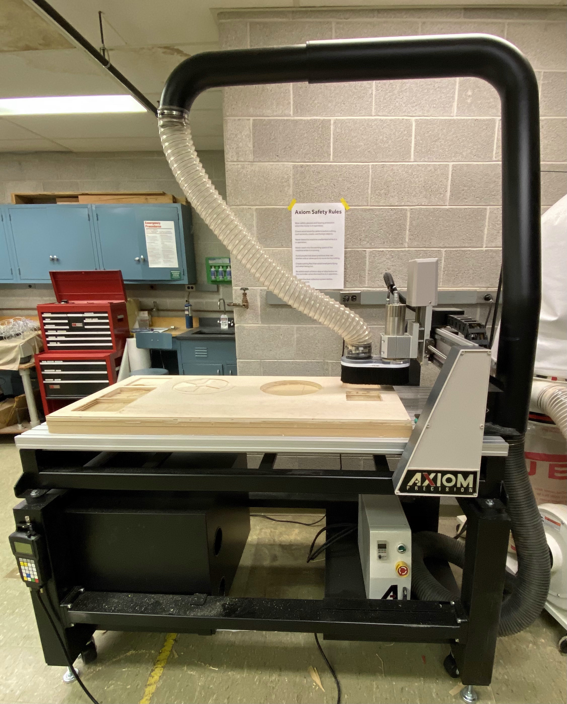
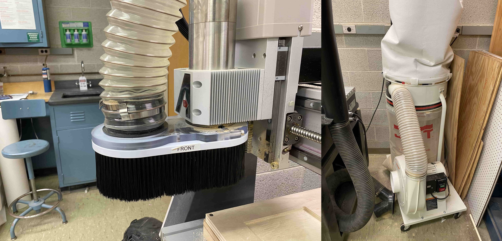
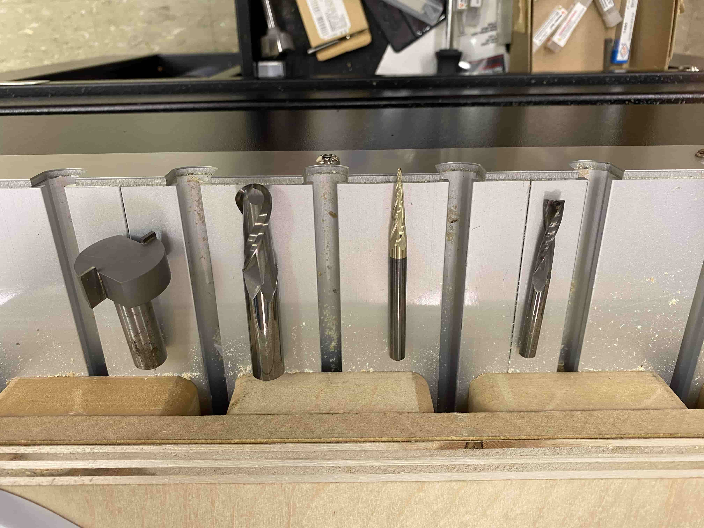
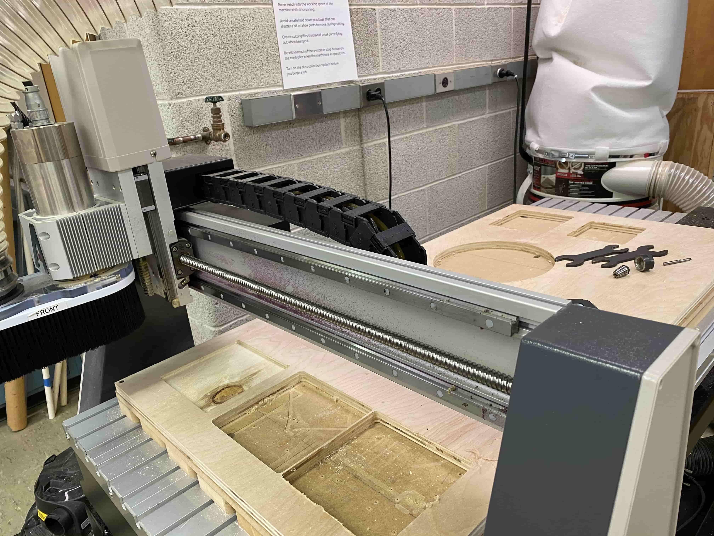

5.1 CNC Router
CNC (Computer Numerical Control) Router is a machine that is controlled by a computer via a CAM software. CNC Router is an automaticated routing machine that follows a tool path that is created by a Computer Aided Manufacturing Software. CNC Router uses a bit and two railing systems on x and y axis. This allows it to change the position of the bit according to the tool path on the CAM Software. This allows the CNC Router to cut out complicated objects or engrave objects in one single go.
Becuase it is a method of manufacturing by subtracting material from an object. It's common to get lots of excess dust of materials. Such as when you make an object using wood, because the bit is chopping off materials from the wood, an accumulation of material occurs. To combat with that CNC Routers has a dust collection system that is made out of a Vacuum and a dust shield around the bit. Moreover the dust shield also protects the user from possible flying pieces (shrapnels) from the object that is being cut.
Every bit has a different purpose but in general there are 4 types of bits. End mill bits which are used for straigth cutting and that makes them a fundimental part of CNC Router. V-groove bits are bits that are shaped in V shape and they are commonly used in refurnishing or adding details to your cut. Ball-nose bits are bits that cuts as if it scoops out material from the object. Surfacing/Fly-cutting bits are used for resurficing the CNC Router bed, these bits have a flat bottom thus leaves a smooth flat surfacefor the CNC Router. Moreover, every bit type also differs to two as down cut and up cut. The different in them is the way they push the material to cut and this also the same reason why the way they push the material that has been cut in to different sides. The 4 different bits are as seen below:
For safely putting the bit on to the CNC Router, we use the collet nut and spring collet. Spring collet holds on to the bit and secures it on to the place and the collet nut is the piece that secures the spring collet to it's place while enabling it to rotate freely. Then they are put togetheer on to the CNC machine using two wrenches

The engine that turns the drill is called the router, and the piece that allows it to move in x/y/z axises is the gantry. Gantry allows the router to float over the CNC bed and this allows for long complicated jobs to be done in one go without changing the bed or the router.
For my experience in using the Axiom CNC router go to the next page -->